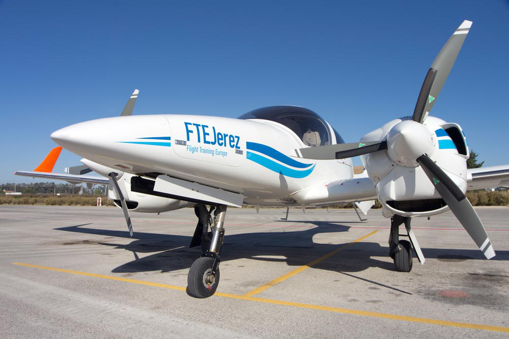

Presentación del evento
Competición diseñada para evaluar habilidades técnicas
Competición diseñada para evaluar habilidades técnicas
Este evento exclusivo, celebrado durante dos días en el Campus de FTEJerez, va más allá de una formación tradicional. Se trata de una jornada técnica de captación de talento diseñada para que los alumnos más avanzados demuestren sus competencias bajo presión.
Ante la presencia de representantes de aerolíneas y expertos del sector, los participantes se enfrentarán a pruebas objetivas tanto en simuladores de última generación (ALSIM AL250 y Diamond DA42) como en vuelo real con la flota propia de la escuela. El objetivo final es conectar la excelencia formativa con la industria, facilitando el reclutamiento directo de los futuros pilotos. 